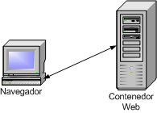
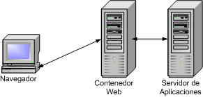
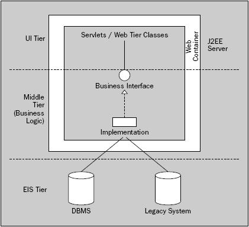
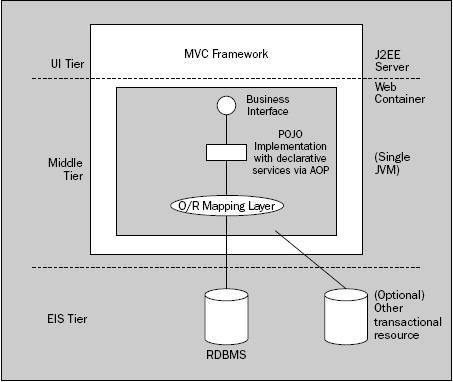
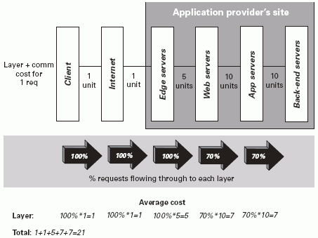
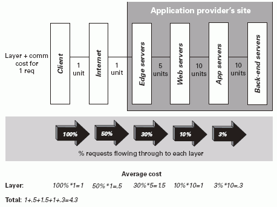
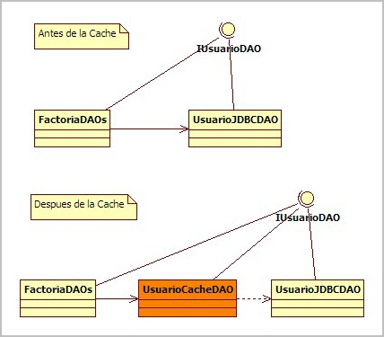

Arquitecturas Web. Caché
Bloques Arquitectónicos
Tal como comentamos en la primera sesión de arquitectura, los 3 bloques arquitectónicos más importantes son:
- Capa de Servicios de Negocio. Elemento central de las aplicaciones.
- Capa de Presentación. Interfaz gráfico o fachada remota.
- Capa de Acceso a Datos. Objetos que acceden a un almacén persistente (normalmente, una o más bases de datos relacionales).
Capa de Servicios de Negocio
La clave de una arquitectura sólida es una capa de servicios bien definida. Esta capa expone la lógica de negocio a los clientes, como interfaces web o capas remotas. Esta capa consistirá en múltiples interfaces, cada uno con un contrato bien definido.
Una capa de servicios bien definida debería:
- Ser completa. Debería exponer todas las operaciones que necesiten los clientes. Puede que sea necesario exponer diferentes interfaces que den soporte a los diferentes clientes.
- Ser simple. No debe ser más compleja que los requisitos de negocio que ofrece.
- Estar definida mediante interfaces en vez de clases, persiguiendo las buenas prácticas de OO.
- Ser orientada a objetos. Se debe minimizar el número de restricciones de los objetos de negocio. Por ejemplo, no se debe forzar a que implementen interfaces especiales o que hereden de alguna superclase particular.
- Ser independiente de la lógica de presentación
- Ser fácil de escribir, maximizando la productividad y reduciendo los costes.
- Forzar la ocultación de la tecnología de acceso a datos. El acceso a datos es un tema de bajo nivel, y por tanto, los objetos de negocio no deben tratar con tecnologías como JDBC ni capturar excepciones específica de este tipo de tecnologías.
- Tratar la gestión de transacciones. Los clientes de la capa de servicios de negocio no se deberían preocupar sobre las transacciones.
- Ser compatible con el escalado horizontal (si fuese necesario). Nada de la capa de negocio debe impedir la realización de un cluster. Sin embargo, esto no significa que la capa de negocio ofrezca escalado horizontal. No tiene por que ser un mecanismo distribuido.
- Ser fácil de probar y estar probada a conciencia. Esto es crucial, ya que la robustez de un objeto de negocio es esencial para construir aplicaciones de calidad.
Acciones Web dentro de MVC
¿Qué sucede si no existe capa de negocio y toda la lógica de negocio residen en la capa web dentro de un Action de Struts o un Controlador Spring, u otras clases de la capa web?
Esto suele ocurrir por la falta de una gestión de los objetos de negocio en aplicaciones JavaEE que no utilizan EJB. Las desventajas son numerosas, incluyendo:
- Atar los objetos de negocio al API de los Servlets.
- Reutilización limitada de los objetos de negocio. Un framework como XWork, el cual desacopla los Actions del API de los Servlets puede paliar este problema.
- Dependiendo del framework MVC utilizado, podemos perder capacidades de OO, ya que, por ejemplo, mediante el uso de Struts los Actions deben heredar de las clases de Struts, lo que nos priva de poder realizar herencia sobre otras clases.
- Responsabilidades difusas en la capa web. Cada clase debería tener una sola y clara responsabilidad. Con este enfoque, las clases de la capa web al menos tienen 2 responsabilidades bien diferentes.
- Ausencia de soporte para la gestión declarativa de transacciones (Spring AOP se puede utilizar para los controladores web, o los filtros de Servlets se puede utiliza para gestionar las transacciones en una aplicación web, pero estas son soluciones tipo tirita para problemas mejor resueltos de forma separada al API de los Servlets).
- La lógica de negocio es difícil de probar, causado por los elementos implícitos del contenedor web.
Capa de Servicios en un Contenedor Ligero
La tendencia actual es utilizar una capa de servicio de negocio mediante POJOs corriendo sobre un contenedor ligero, tipo Spring o PicoContainer, el cual reemplaza la estructura de los EJB con mucha menos complejidad.
En pocas palabras, un contenedor ligero:
- Gestiona el ciclo de vida de los objetos de negocio. La principal diferencia con los EJBs es que un contenedor ligero puede gestionar POJOs: no hay necesidad de implementar contratos especiales.
- Ofrece facilidades de lookup, resolviendo la dependencia entre objetos gestionados por el contenedor. El paradigma de Inversion Of Control (IoC) es el elemento central de este tipo de contenedores ligeros.
- Ofrece servicios empresariales (mediante AOP) como gestión de transacciones declarativas sobre objetos corriendo dentro del contenedor, devaluando una de los principales defensas de EJB.
El uso de buenas prácticas OO, como que los clientes realicen la llamadas a interfaces y no a clases. Estos interfaces definen contratos en la capa de negocio, los cuales permiten el intercambio de diferentes implementaciones. IoC hace esta separación interfaz/implementación una cosa sencilla.
Los objetos de negocio y los componentes de la capa de presentación que utilizan estos BOs se ejecutan en la misma máquina virtual (JVM). La escalabilidad horizontal se puede conseguir mediante el clustering de la aplicación entera en máquinas virtuales adicionales.
A partir de una capa de servicios bien definida, los clientes de los servicios deberían ser más sencillos.
Limitaciones de Qué se Puede Exponer
Hay algunas cosas que una capa de servicio no debería exponer al resto del mundo. Por ejemplo:
- Si la capa de servicios es remota, es obligatorio trabajar con parámetros y tipos de retorno Serializable. También hay que considerar la eficiencia ¿Cuanto costará que estos objetos se codifiquen (marshall) y descodifiquen (unmarshall) para viajar a través de la red?
- Con algunas tecnologías de persistencia, puede ser necesario desconectar los objetos del almacén persistente de un modo explicito.
Las tecnologías de persistencia se dividen en 2 tipos (en ambos un objeto del dominio normalmente se mapea con una fila de una tabla):
- Registro Activo: La lógica de acceso a datos se incluye en los objetos del dominio. Este enfoque es que utilizan los EJBs de Entidad y en la mayoría de frameworks de persistencia.
- Mapeo de Datos (Data Mapper): Una capa de mapeo externo al servidor de aplicaciones, como Hibernate, contiene toda la lógica de persistencia. Los objetos del dominio normalmente no contienen SQL, aunque acaban haciendo algunas concesiones sobre el hecho de que van a ser persistidos.
En la mayoría de tecnologías persistentes, existen retos en desconectar los objetos persistentes de sus almacenes. La solución pasa por:
- Utilizar una capa de Transfer Objects (TOs) para mantener los datos desconectado, incluso en aplicaciones que residen en un único nivel. Esto se suele evitar, lo cual fuerza la escritura de objetos falsos y malgasta las ventajas de una arquitectura mononivel.
- Usar un API de acceso a datos como Hibernate o JDO 2.0 que permita la desconexión y reconexión de los objetos persistentes. Como con los TOs, esto requiere materializar todas las relacione necesarias.
- Evitar las tecnologías como los EJBs de Entidad que descartan las desconexiones.
- Mantener la sesión de persistencia abierta hasta que el trabajo del cliente haya terminado, por ejemplo, en una aplicación web, hasta que la vista pinte los datos. A primera vista es una opción atractiva, ya que elimina los problemas de traslado de relaciones hasta la profundidad requerida, pero en realidad es peligroso, ya que las excepciones relaciones con la persistencia pueden problema problemas en la capa de presentación.
Capa de Presentación
El requisito más común es exponer los servicios de negocio vía un interfaz web. En esta arquitectura, existe un linea divisoria que fuerza la distribución, la que existe entre el cliente y su navegador, y el servidor web. Sin embargo, no son necesarias más barreras distribuidas, ya que normalmente todo funciona mejor sin los costes asociados a los objetos distribuidos.

Lo que comúnmente se conoce como arquitectura JavaEE (J2EE) tradicional u ortodoxa promueve la separación física entre el nivel web (vía un Contenedor Web) y los objetos de negocio (vía un Servidor de Aplicaciones). La tendencia señala en otra dirección, donde toda la aplicación reside un único nivel y, como hemos comentado, la escalabilidad se consiga mediante el clustering de servidores.

Este es el enfoque más sencillo, con mejor rendimiento, y con un enfoque más OO.
La separación de los BOs del nivel web es una de las falacias del mundo JavaEE.
Puede haber un linea divisoria entre el servidor web y el contenedor web. Por ejemplo, se puede utilizar Apache como servidor HTTP, con un conector proxy el cual envíe peticiones al contenedor JavaEE. Esta distribución no afecta al código de la aplicación. Lo que varía es el efecto en el rendimiento. Normalmente este enfoque es más lento que si el contenedor web sirve todo el contenido web, a no ser que exista un gran proporción de contenido estático respecto al dinámico. Otra razón puede ser por cuestiones de seguridad, colocando todas las partes de la aplicación JavaEE detrás de un firewall.
Importancia de la Separación Lógica
Parece ser que por lo general, no queremos una separación física de los objetos de negocio del nivel web. Sin embargo, si queremos una separación lógica, y el hecho de rechazar la separación física no implica que olvidemos esto.
El primer paso para tener una separación lógica es tener una capa de servicios de negocio bien definida. Sin embargo, también debemos asegurar que el acceso a estos servicios sea fácil y que no produzca una dependencia en la capa de UI o en la tecnología detrás del interfaz de los servicios de negocio
La mayoría de las aplicaciones JavaEE contienen demasiado código dentro de la capa web, ya sea porque pocos libros enfatizan la importancia de esta separación (se centran más en separar la lógica de control de la vista), que los frameworks MVC tipo Struts no obligan a realizar esta separación, y al no obligar, los desarrolladores tienden a colocar la lógica de negocio en los Action, o bien porque parece que la solución más fácil sea colocar todo en el Action y evitar la creación de las diferentes capas mediante el uso de interfaces/implementaciones desacopladas mediante factorías.
En resumen, el interfaz web debería ser ligero. Se debería construir sobre la capa de servicio y únicamente contener el código necesario para capturar los eventos del usuarios y visualizar las respuestas.
Clientes Remotos
El uso de los clientes remotos debe tratarse con cuidado. Aunque no se trata de un acceso complejo, los servicio de negocio solo deben exponer interfaces remotos cuando sea necesario.
Aunque nuestros servicios de negocio no incluyan soporte nativo para el acceso remoto, el proceso de añadir una fachada sobre la capa de servicios es tan fácil como añadir una fachada web.
Las elecciones para acceder a servicios remotos se centran en RMI (Remote Method Invocation), la cual es la tecnología que utilizan los EJBs para la comunicación remota de los componentes; también se pueden utilizar diferentes protocolos Hessian o Burlap vía Commons Proxy (jakarta.apache.org/commons/sandbox/proxy) o el uso de servicio SOAP con Web Services vía herramientas como Apache Axis (ws.apache.org/axis)
Capa de Acceso a Datos
El acceso a los datos persistentes normalmente determina el rendimiento global de las aplicaciones empresariales, ya que el almacén suele ser el cuello de botella. Los datos persistentes suelen almacenarse en una base de datos relacional, aunque en ocasiones podemos tener múltiples almacenes con transacciones distribuidas o aplicaciones legacy.
El concepto de capa de acceso a datos engloba una o más bases de datos , aunque el concepto de una capa EIS (Sistema de Información Empresarial) engloba no solo a las bases de datos, sino también sistemas legacy, los cuales también suelen ser transaccionales.
Tecnologías
Las tecnologías de acceso a datos incluidas en JavaEE son JDBC, JDO y los EJBs de Entidad. Sin embargo, es muy común utilizar productos de terceros, y en la mayoría de las ocasiones, vale la pena.
A la espera de EJB 3.0, el uso de EJBs de Entidad produce resultados no muy buenos. Esta apreciación esta ampliamente aceptada dentro de la comunidad JavaEE. ¿Qué nos queda?
- JDBC es una buena tecnología para acceso a bases de datos relacionales vía SQL. Si utilizas JDBC, hazlo indirectamente mediante una buena capa de abstracción. Frameworks como Commons DbUtils (jakarta.apache.org/commons/dbutils) y Apache iBatis (ibatis.apache.org) facilitan y mejoran la calidad de este tipo de código.
- Hibernate es un excelente tecnología ORM
- A pesar de la lenta adopción desde su lanzamiento en 2001, JDO esta emergiendo como estándar Java de persistencia.
- Alternativas comerciales como TopLink, aunque no tengan nada que los hagan muy superiores (normalmente, asistentes gráficos y soporte por parte de las empresas propietarias) a Hibernate o JDO.
Como ya sabemos, podemos mezclar y encajar código basado en SQL con persistencia ORM. El patrón DAO es la elección correcta, ya que oculta los detalles de las operaciones de persistencia tras un interfaz DAO, el cual libera a los objetos de negocio de conocer que tecnología de persistencia se esta utilizando.
Arquitectura Web
En los últimos tiempos, predominan los clientes web ligeros respecto a los interfaces de usuario pesados (Swing), aunque no hemos de descartarlos. Por lo tanto, las aplicaciones web son el estándar de facto de las aplicaciones empresariales.
Estas arquitecturas, fácilmente escalables a nivel de hardware (clustering), pueden acceder al mismo tipo de APIs que los EJBS, además, se benefician de las capacidades que ofrece el servidor J2EE, como pueden ser la gestión de transacciones y el pool de conexiones. Finalmente, también pueden utilizar todos los servicios de empresas, tales como JMS, JDBC, JavaMail y JCA. La única tecnología a la que no puede acceder es a los Entity Beans. Por lo tanto, cubre las necesidades de la mayoría de las aplicaciones.
En este tipo de arquitectura, tanto la capa web como la de negocio se ejecutan en la misma JVM, normalmente desplegadas sobre un contenedor web (tipo Tomcat, Resin, etc...). Sin embargo, es muy importante, que a nivel lógico si que las separemos. Uno de los mayores riesgos a la hora de diseñar una aplicación web es mezclar responsabilidades entre componentes de presentación y de lógica de negocio.
Ventajas
El uso de arquitecturas web ofrece las siguientes ventajas:
- Velocidad. Estas arquitecturas son mínimamente penalizadas por el servidor J2EE.
- Los interfaces de usuario y los componentes de negocio se ejecutan dentro de la misma JVM, lo cual ofrece un gran rendimiento.
- Al ejecutarse en una única JVM, posibilidad de hacerlo en un contenedor web, lo que conlleva licencias más baratas y administración más sencilla.
- El uso de POJOs en vez de EJBs para encapsular la lógica de negocio elimina las configuraciones adicionales y complejidades de acceso y despliegue asociadas con la tecnología EJB.
- Mayor portabilidad entre servidores de aplicaciones o contenedores web. Al haber menos configuraciones, es más fácil su portabilidad.
- Las pruebas unitarias de los objetos de negocio, en principio, son más sencillas porque no necesitamos desplegarlos en el servidor J2EE para poder probarlos.
- No se realizan llamadas RMI, por lo que se mantiene la convención de llamada por paso de referencia.
- Los objetos de negocio pueden exponer interfaces de granularidad fina.
Un prerequisito de la mayoría de arquitecturas empresariales es la escalabilidad. Este tipo de arquitectura puede escalar mediante múltiples servidores con la ayuda de balanceadores de carga que repartan las peticiones entre los diferentes nodos de servidor.
Limitaciones
Como toda solución, este tipo de arquitectura también tiene sus limitaciones, entre las que se encuentran:
- Sólo soporta interfaces web. Si fuera necesaria que un cliente pesado acceder a la capa de negocio de forma remota, entonces necesitaríamos una capa de servicios web (por ejemplo, mediante Apache Axis) o una arquitectura EJB.
- Falta de un entorno estándar para gestionar los objetos de negocio.
- Puede no existir una capa de servicios de negocio bien definida. Se puede evitar mediante el uso de frameworks web, tipo Struts, Spring, etc...
- Puede que necesitemos implementar "a mano" algún tipo de solución que los EJBs ya ofrecen, como puedan ser la gestión de transacciones declarativas o el modelo declarativo de seguridad, que nos toca implementarlo mediante el código de la aplicación.
- No existe un estándar de configuración de los objetos de negocio (aunque los EJBs tampoco lo hacen muy bien).
- Falta de consistencia entre aplicaciones, o incluso en una misma aplicación. Cada aplicación tiende a manejar a su modo el acceso a los objetos de negocio, su configuración, la gestión de transacciones, etc... Por lo tanto, cada aplicación requiere de su propia curva de aprendizaje.
El mayor inconveniente que puede ser la falta de una capa de servicios claramente definida, se puede resolver mediante el uso consistente de interfaces de negocio y el acceso consistente a los objetos de negocio.
Implementación
En esta arquitectura, la capa de servicios de negocio consiste en un conjunto de interfaces Java implementados mediante POJOs (clases Java normales y corrientes).

Arquitectura Contenedor Ligero
Por supuesto que las arquitecturas JavaEE pueden ser exitosas sin EJBs. Sin embargo, se puede utilizar algunas de las buenas ideas de los EJBs y llevarlas a una arquitectura sin EJBs. Para ello, se utiliza una arquitectura de Contenedor Ligero.
Del mismo modo que los EJBs, se plantea una arquitectura centrada a partir de una capa de servicios de negocio gestionados por el contenedor. Pero aquí se acaba la similitud. En vez de ejecutarse dentro de un contenedor EJB, los objetos de negocio corren dentro de un contenedor ligero.
Un contenedor ligero no está atado a JavaEE, por lo que puede correr en un contenedor web, una aplicación "standalone", o incluso en un contenedor EJB (si fuese necesario). Además, tampoco esta atado al API de los Servlets, como los frameworks MVC, lo cual seria una pobre elección para gestionar los objetos de negocio.
Los contenedores ligeros tiene un coste de arranque insignificante y elimina el proceso de despliegue necesario en los EJBs. Los contenedores ligeros ofrecen un modo de gestionar y localizar los objetos de negocio; ya no necesitan búsquedas JNDI, localizadores de servicio o singletons, ya que ofrece un registro de los objetos de aplicación. Este enfoque es meno invasivo y más poderoso que los EJBs, siempre y cuando todo resida en la misma JVM.
En la actualidad, los contenedores ligeros más conocidos son:
- Framework Spring (www.springframework.org)
- PicoContainer (www.picocontainer.org)
Para ofrecer una solución completa, el contenedor ligero debe ofrecer servicios empresariales como la gestión de transacciones. Esto normalmente se realiza mediante invocaciones a intercepciones AOP: añadir comportamiento adicional (como la gestión de transacciones) de un modo transparente, antes y tras la ejecución de los métodos de negocio.
Los contenedores ligeros son una arquitectura reciente, hecha posible al desarrollo de frameworks open source con soporte para la IoC.
Ventajas
El uso de arquitecturas web ofrece las siguientes ventajas:
- Arquitectura simple pero potente
- Permite la escalabilidad horizontal mediante el clustering del contenedor web. Las limitaciones a la escalabilidad vendrán dadas por la gestión del estado de la sesión.
- Más sencilla que una arquitectura EJB, pero más compleja que una arquitectura Web.
- Servicios declarativos sofisticados mediante AOP.
- No requiere un contenedor EJB
- Alta portabilidad entre servidores de aplicaciones.
- IoC permite al contenedor ligero conectar objetos, lo que elimina la complejidad de búsqueda y conexión de recursos del código de la aplicación. La dependencia y colaboración de los objetos se expresa mediante simples propiedades JavaBean o argumentos de constructor, siendo el contenedor el que las resuelve en tiempo de ejecución. IoC permite que la granularidad de los BOs sea fina.
- Los BOs son más fáciles de probar fuera de un servidor de aplicaciones, y algunas pruebas de integración se pueden realizar desde pruebas JUnit (sin necesidad de Cactus). Esto facilita seguir un enfoque TDD en el desarrollo.
Limitaciones
A continuación se enumeran algunas de las desventajas de esta arquitectura:
- Igual que la arquitectura anterior, para permitir el acceso remoto de cliente es necesaria una fachada remota (RMI, Web Services, ...) Los Web Services son una gran alternativa para esta fachada, pero solo en el caso de utilizar RMI/IIOP será necesario el uso de EJBs.
- No existe un estándar para contenedores ligeros. Pese a que Spring esta muy difundido, es un estándar de facto, pero no forma parte de ninguna especificación de Sun. Aun así, como los objetos de la aplicación no dependen de ningún API, en el caso de querer migrar de framework, los cambios se realizan sobre ficheros de configuración y clases muy especificas.
- Se trata de una arquitectura todavía desconocida para la mayoría del mercado, donde no existen muchos desarrolladores con dominio sobre las tecnologías empleadas. Por suerte, poco a poco, Spring suena más y mejor.
Implementación
Dentro de una aplicación, todas las clases se ejecutan dentro de la misma JVM. Desde el punto de vista del usuario, la capa web la ofrece un framework MVC, ya sea mediante Struts, o en el caso de Spring, mediante una capa web que puede ser gestionar por el contenedor y ofrecer un integración cercana con los objetos de negocio. Los objetos de negocio serán POJOs, ejecutándose dentro del contenedor ligero. Estos pueden ser avisados vía intercepcion AOP para que ofrezcan servicios empresariales. El acceso a los BOs ser realizará exclusivamente a través de sus interfaces, lo cual permite el intercambio de implementaciones de negocio, sin necesidad de modificar el código llamador. En cuanto al acceso a datos, ya sea mediante un framework ORM tipo Hibernate, o JDBC si la abstracción de ORM no aporta casi valor.
A parte de la ya comentada posibilidad de gestionar servicios empresariales de forma declarativa mediante AOP, el uso de un contenedor ligero como Spring permite que si controlamos las transacciones mediante conexiones JDBC, sin utilizar JTA, si en un futuro necesitamos sacar ventaja de JTA, entonces sólo habremos de cambiar la configuración de Spring.

Caché
En la actualidad, el rendimiento es un factor muy importante en una aplicación. Los tiempos de respuesta deben ser mínimos, y cuanto menores, mejor.
Gran parte del tiempo de procesamiento de una aplicación se emplea en el acceso a la fuente de datos y su consulta/manipulación. Una forma de mejorar estos accesos es evitarlos :)
En general, una caché es una solución a un problema básico: estamos empleando la mayor parte del tiempo de procesamiento en obtener datos que ya los hemos obtenido recientemente.
Por ejemplo, si empleamos un mecanismo de "cacheo", de modo que en vez de ir a la base de datos tras cada petición realizada por el cliente, lo haga cada minuto, y mientras tanto devuelva la información que almacena en memoria, estaremos ahorrando tiempo de procesamiento.
¿Cachear o No Cachear?
Cachear nos permite obtener beneficios importantes, pero requiere una comprensión de los elementos fundamentales para realizar una buena implantación de una solución (o implementar una solución propia).
Por lo tanto, para cachear aplicaciones Java, debemos resolver los siguientes problemas:
- ¿Cuando debemos cachear?
- Las decisiones hemos de tomarlas basadas en los costes de operación, volatilidad de los datos almacenados, patrones de acceso al almacén de datos y tamaño de la información almacenada.
- ¿Cómo debemos gestionar los datos actualizados?
- Los datos incorrectos deben ser invalidados y actualizados de un modo correcto.
- ¿Cómo debemos gestionar los datos obsoletos?
- A veces, los datos caducados son aceptables, pero normalmente la estrategia a seguir debe refrescar los datos de forma regular.
- ¿Cómo debemos gestionar el acceso concurrente a nuestra caché?
- El acceso concurrente puede protegerse mediante métodos sincronizados, pero este tipo de acceso puede ser demasiado restrictivo.
La implementación más sencilla de una caché es emplear un Mapa con pares (clave, valor), de modo que cada clave identifica de forma univoca a un objeto cacheado. Pero esta implementación carece de mecanismos de caducidad, concurrencia, tolerancia a faltos, etc...
En el mercado existen diferentes soluciones de cacheo para contenido estático las cuales están bien desarrolladas e implantadas, como pueden ser servidores proxy de cacheo, o los propios servidores web que almacenan en memoria tanto imágenes como páginas web estáticas. Pero el contenido dinámico también es un centro de atención para el cacheo. Es más, al cachear contenido dinámico es cuando vamos a obtener una productividad mucho mayor que la obtenida sin realizar el proceso de caché.
Ejemplo
A continuación, mostramos un ejemplo visual de ilustra el impacto de una estrategia de cacheo agresiva en el rendimiento de un sistema. Los datos se han obtenido de un articulo de Mike Conner, descrito en el libro "Bitter Java" (Manning).
Para empezar, tenemos una arquitectura sin caché. En cada capa, se muestran los costes de cada comunicación. En las llamadas a las capas posteriores sus pesos son mayores que respecto a las anteriores, ya que el contenido estático siempre es más barato. Conforme vamos hacia la derecha, el contenido se convierte más dinámico.

Para contrastar, podemos observar como una política agresiva de cacheo incrementa el rendimiento de la arquitectura, decrementando de forma significativa la carga de los nodos que están protegidos por cachear anteriores. Esta arquitectura utiliza caches en diferentes puntos, junto a Internet que tiene cachés internas que nosotros nunca vemos.

Dentro del mercado actual, existen múltiples alternativas ya desarrolladas, siendo las más conocidas EhCache (ehcache.sourceforge.net), JCS (jakarta.apache.org/jcs), SwarmCache (swarmcache.sourceforge.net) y OSCache (esta última es la que vamos a estudiar en esta sesión)
OSCache
OSCache (http://www.opensymphony.com/oscache) es una solución gratuita de cacheo que incluye una librería de tags JSP y un conjunto de clases para realizar cacheo dinámico con granularidad fina de contenido JSP, respuestas de Servlets u objetos arbitrarios.
Esta librería ofrece cacheo persistente en disco o en memoria, lo cual permite al sitio web tener una alta tolerancia a los errores (en el caso de que ocurra un error, como pueda ser que se caiga la Base de Datos, se puede mostrar la información que estaba cacheada, de modo que los usuarios puede navegar por el site casi sin notar nada extraño).
Problemas Resueltos
OSCache resuelve problemas fundamentales para las web dinámicas:
| Problema | Descripción | Solución OSCache |
|---|---|---|
| Cacheo de Contenido Dinámico | El contenido dinámico de algunos formularios debe ejecutarse tras cada petición, pero a veces ese contenido no varía con cada petición. Cachear toda la página no es una solución, ya que puede haber secciones de la página que cambian con cada petición. | Mediante el cacheo de objetos y/o secciones de JSPs. |
| Cacheo de Contenido Binario | Las imágenes generadas y los PDFs pueden ser muy costosos en términos de carga del servidor. | Mediante el uso del filtro CachingFilter, el cual puede cachear cualquier URI (ya sea una página web entera o una imagen o documento PDF generado). |
| Tolerancia de Errores | Si ocurre algún error en algún lugar de una pagina dinámica, el servidor devuelve un error aunque el 95% restante de la página se hubiese ejecutado correctamente. | Permitiendo servir el contenido cacheado si se produce un evento de error, y a continuación, reportar el error de forma apropiada. |
Lista de Prestaciones
Además de las características especificas de los servlets, OSCache se puede utilizar como mecanismo de caché de aplicación para cualquier aplicación Java. Entre las prestaciones genéricas podemos destacar:
- Cacheo de Objetos Arbitrarios - No solo podemos cachear porciones de código JSP o peticiones HTTP. Cualquier objeto Java puede cachearse.
- API Comprensible - El API de OSCache ofrece un control total a nivel programativo sobre todas las prestaciones.
- Cacheo Persistente - La caché puede ser almacenada en disco, permitiendo que los datos que son de crear (con un coste computacional alto) permanezcan cacheados incluso cuando la aplicación se reinicia.
- Clustering - Ofrece soporte para clustering de datos cacheado, sin necesidad de realizar ningún cambio a nivel de código.
- Expiración de las Entradas Cacheadas - Ofrece un gran control sobre la expiración de los objetos cacheado, incluyendo políticas de refresco configurables.
Configuración
Para que nuestra aplicación pueda utilizar esta librería, el archivo oscache.jar debe estar en la carpeta WEB-INF/lib de la aplicación web. Toda la configuración de OSCache recae en el archivo oscache.properties el cual debe encontrarse en el classpath de la aplicación.
El archivo de muestra que obtenemos al descargar la librería es bastante autoexplicatorio. Aun así, vamos a comentar las propiedades más importantes:
- cache.memory: indica si queremos la cache en memoria (true) o en disco (false).
- cache.capacity: indica el número de elementos que puede almacenar la caché, aunque por defecto, la capacidad es ilimitada.
- cache.algorithm: indica el algoritmo de caché a emplear cuando se haya especificado un número fijo en la capacidad de la caché. Por defecto se utiliza un algoritmo LRU, aunque podemos cambiar por FIFO o implementar uno propio.
- cache.path: ruta del archivo en disco donde se almacenará la caché persistente.
En nuestra aplicación, hemos configurado que almacene hasta un máximo de 1000 objetos en memoria. Para más información, podéis acceder a la documentación de la configuración.
Modo de Empleo
Tal como hemos comentado, podemos utilizar la caché a nivel de contenido dinámico mediante el uso de taglibs o filtros, o utilizar la caché a nivel de aplicación para cachear VOs de la aplicación.
En nuestro caso nos vamos a centrar en la segunda posibilidad, ya que el cacheo de contenido dinámico dentro de una arquitectura MVC no tiene mucho sentido.
El primer paso es decargar la libreria (la última versión es la 2.3.2): http://www.opensymphony.com/oscache/download.action
Para poder utilizar la caché a nivel de aplicación, hemos de utilizar la clase com.opensymphony.oscache.general.GeneralCacheAdministrator. Esta clase se encarga de cargar la configuración de la caché a partir del archivo oscache.properties.
Cada vez que queramos trabajar con un objeto candidato a estar en la caché, primero hemos de consultarle a la caché si ya tiene el objeto cacheado. Aquí pueden pasar dos cosas:
- que el objeto esté en la caché y que su contenido no haya caducado, con lo que la caché nos devolverá el objeto
- o que el objeto no esté en la caché, o que su contenido haya caducado, con lo cual se lanzará un excepción de tipo NeedRefreshException. Una vez capturada la excepción, llega el momento de acceder al contenido real (normalmente accediendo a la Base de Datos).
- Si al recuperar el objeto no se produce ningún error, actualizaremos la caché con este nuevo objeto.
- Pero si salta alguna excepción, podemos recuperar el contenido que había caducado, de modo que la aplicación sigue funcionando, aunque la información mostrada no sea la información actualizada.
A continuación se muestra un pequeño esquema de trabajo con OSCache.
String myKey = "myKey";
String myValue;
int myRefreshPeriod = 1000;
try {
// obtenemos de la cache
// (admin es una instancia de GeneralCacheAdministrator)
// el objeto identificado por una clave unívoca
// y le indicamos el periodo de refresco (en ms)
myValue = (String) admin.getFromCache(myKey, myRefreshPeriod);
} catch (NeedsRefreshException nre) {
try {
// obtenemos el valor, normalmente accediendo a la bbdd
myValue = "Estos son los datos obtenidos.";
// Almacena el objeto identificado por la clave en la caché
admin.putInCache(myKey, myValue);
} catch (Exception ex) {
// podemos obtener el contenido "caducado"
// para ofrecer tolerancia de fallos
myValue = (String) nre.getCacheContent();
// Es imprescindible realizar la llamada a
// cancelUpdate si no se ha recargado el contenido cacheado
admin.cancelUpdate(myKey);
}
}
Para facilitar la comprensión de este esquema, vamos a aplicar este mecanismo a la Biblioteca jTech.
Ejemplo Integración
Con la arquitectura que tenemos preparada, que ofrece puertas de entrada mediante factorías tanto al negocio como a los datos, podemos introducir el mecanismo de cacheo en ambas capas.
Para el siguiente ejemplo, vamos a cachear el DAO del usuario, de modo que mientras no se modifique ningún atributo de un usuario, mantenga en caché los datos de cada usuario.

CacheManager
Esta clase es la encargada de inicializar la caché. Por defecto, busca en el classpath el archivo oscache.properties (en nuestro caso, en la carpeta resources del proyecto Eclipse, que a posteriori, a la hora del despliegue, se copia en WEB-INF/classes).
Para evitar múltiples instancias de este gestor de caché, utilizando el patrón Singleton, nos aseguramos de que solo haya un único objeto caché en la aplicación (siempre y cuando no tengamos ningún cluster).
package es.ua.jtech.proyint.cache;
public class CacheManager {
private static CacheManager me = new CacheManager();
private Log logger = LogFactory.getLog(CacheManager.class.getName());
private GeneralCacheAdministrator cache = null;
private CacheManager() {
try {
cache = new GeneralCacheAdministrator();
} catch (Exception e) {
logger.error("Error al inicializar la cache", e);
e.printStackTrace();
}
logger.info("Cache Creada");
}
public static CacheManager getInstance() {
return me;
}
public GeneralCacheAdministrator getCache() {
return cache;
}
}
FactoriaDAOs
Ahora, en la factoría, en vez de instanciar un DAO concreto, creamos una nueva implementación que funcione como envoltorio del DAO situando la caché entre el negocio y los datos.
public class FactoriaDAOs {
private static FactoriaDAOs me = new FactoriaDAOs();
private GeneralCacheAdministrator cache = null;
private FactoriaDAOs() {
// Obtenemos la cache
this.cache = CacheManager.getInstance().getCache();
}
public static FactoriaDAOs getInstance() {
return me;
}
public IUsuarioDAO getUsuarioDAO() {
// En este DAO cacheamos
return new UsuarioCacheDAO(this.cache);
}
public ILibroDAO getLibroDAO() {
return new LibroJDBCDAO();
}
public IOperacionDAO getOperacionDAO() {
return new OperacionJDBCDAO();
}
}
UsuarioCacheDAO
Por lo tanto, necesitamos un envoltorio del DAO que haga de puente entre la caché y los datos, de modo que a nivel de método podemos decidir que métodos cacheamos.
public class UsuarioCacheDAO implements IUsuarioDAO {
private static Log logger = LogFactory.getLog(UsuarioCacheDAO.class.getName());
private GeneralCacheAdministrator cache;
private final static String GRUPO_USUARIO = "GrupoUsuario";
private IUsuarioDAO dao;
public UsuarioCacheDAO(GeneralCacheAdministrator laCache) {
this.cache = laCache;
this.dao = new UsuarioJDBCDAO();
}
public void addUsuario(UsuarioTO usuario) throws DAOException {
dao.addUsuario(usuario);
// Limpiamos la cache
cache.flushGroup(UsuarioCacheDAO.GRUPO_USUARIO);
return;
}
public int delUsuario(String login) throws DAOException {
int result = dao.delUsuario(login);
// Limpiamos la cache
cache.flushGroup(UsuarioCacheDAO.GRUPO_USUARIO);
return result;
}
@SuppressWarnings("unchecked")
public List<UsuarioTO> getAllUsuarios() throws DAOException {
List<UsuarioTO> result = null;
// Creamos la clave teniendo en cuenta los parametros
// TODO Crear una clase de Constantes de Cache (similar a Tokens)
String key = "UsuarioSelectAll";
// Primero, buscamos el usuario en la cache (max 600 seg)
try {
result = (List<UsuarioTO>) cache.getFromCache(key, 600);
logger.debug("Listado de usuarios de la cache :)");
} catch (NeedsRefreshException nre) {
// si no los encuentra
try {
result = dao.getAllUsuarios();
// los almacenamos en la cache dentro de un grupo
cache.putInCache(key, result, new String[] { UsuarioCacheDAO.GRUPO_USUARIO });
} catch (Exception ex) {
logger.warn("Recuperando usuarios de la cache", ex);
// Tenemos el contenido por si queremos tolerancia a fallos.
result = (List<UsuarioTO>) nre.getCacheContent();
// Evitamos el refresco de la cache
cache.cancelUpdate(key);
}
}
return result;
}
public List<UsuarioTO> getPosiblesPrestatarios() throws DAOException {
return dao.getPosiblesPrestatarios();
}
public UsuarioTO selectUsuario(String login, String password)
throws DAOException {
return dao.selectUsuario(login, password);
}
public UsuarioTO selectUsuario(String login) throws DAOException {
UsuarioTO result = null;
// Creamos la clave teniendo en cuenta los parametros
// TODO Crear una clase de Constantes de Cache (similar a Tokens)
String key = "Usuario(" + login + ")";
// Primero, buscamos el usuario en la cache
try {
result = (UsuarioTO) cache.getFromCache(key, 600);
} catch (NeedsRefreshException nre) {
// si no los encuentra
try {
result = dao.selectUsuario(login);
// los almacenamos en la cache dentro de un grupo
cache.putInCache(key, result, new String[] { UsuarioCacheDAO.GRUPO_USUARIO });
} catch (Exception ex) {
logger.warn("Recuperando usuario de la cache", ex);
// Tenemos el contenido por si queremos tolerancia a fallos.
result = (UsuarioTO) nre.getCacheContent();
// Evitamos el refresco de la cache
cache.cancelUpdate(key);
}
}
return result;
}
public int updateUsuario(UsuarioTO usuario) throws DAOException {
int result = dao.updateUsuario(usuario);
// Limpiamos la cache
cache.flushGroup(UsuarioCacheDAO.GRUPO_USUARIO);
return result;
}
}
El código fuente y los ficheros de configuración mostrados se pueden descargar aquí.
A modo de conclusión, destacar lo fácil que es añadir una caché a la aplicación. Lo más difícil respecto al uso de una caché es definir una buena política de cacheo y caducidad de los datos, analizando las dependencias entre los diferentes componentes de la aplicación.
Para Saber Más
Bibliografía
- Expert one-on-one J2EE Development without EJB, de Rod Johnson. Secuela de libro J2EE Design and Development, el cual sirvió como base del desarrollo de Spring, donde se defiende a capa y espada el uso de la Arquitectura de Contenedor Ligero.
Enlaces
- Articulo de Martín Pérez sobre Hibernate y el uso de Caché http://www.javahispano.org/articles.article.action?id=95